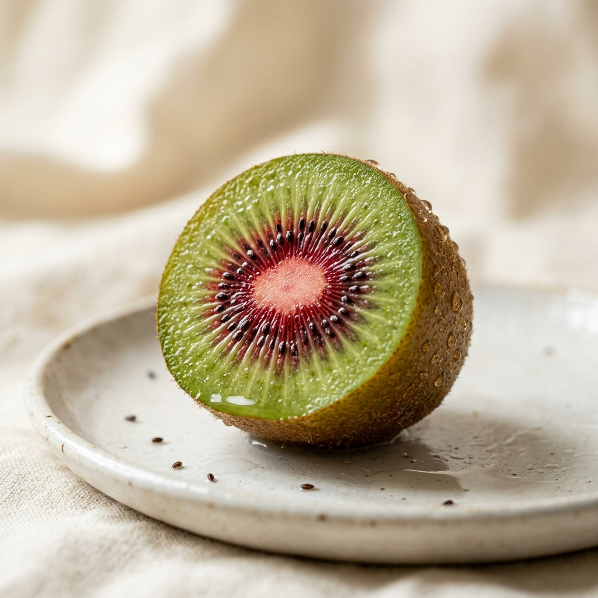

Our Story
대지에서 식탁까지
순수한 열정
루비키위는 단순한 과일이 아닙니다. 농부들의 정성과 자연의 시간이 빚어낸 결실입니다. 가장 완벽한 상태로 수확하여 여러분의 식탁 위에 최고의 맛을 전달합니다.
초록빛 상큼함 속에 숨겨진 강렬한 레드. 고당도의 달콤함과 비타민 C의 풍부함을 한 번에 경험하세요.

Why Ruby Kiwi?
일반 키위보다 높은 당도를 자랑하며, 입안 가득 퍼지는 베리류의 풍미가 일품입니다.
가운데 붉은 심지에는 강력한 항산화 성분인 안토시아닌이 풍부하게 들어있습니다.
오렌지의 3배에 달하는 비타민 C를 함유하여 하루 한 알로 에너지를 충전하세요.
Our Story
루비키위는 단순한 과일이 아닙니다. 농부들의 정성과 자연의 시간이 빚어낸 결실입니다. 가장 완벽한 상태로 수확하여 여러분의 식탁 위에 최고의 맛을 전달합니다.
Global Ruby Kiwi
Ruby Kiwi is a premium variety known for its distinctive red center and exceptional sweetness. Packed with antioxidants and Vitamin C, it offers a unique berry-like flavor profile that distinguishes it from traditional green kiwis. Experience the finest fruit nature has to offer.